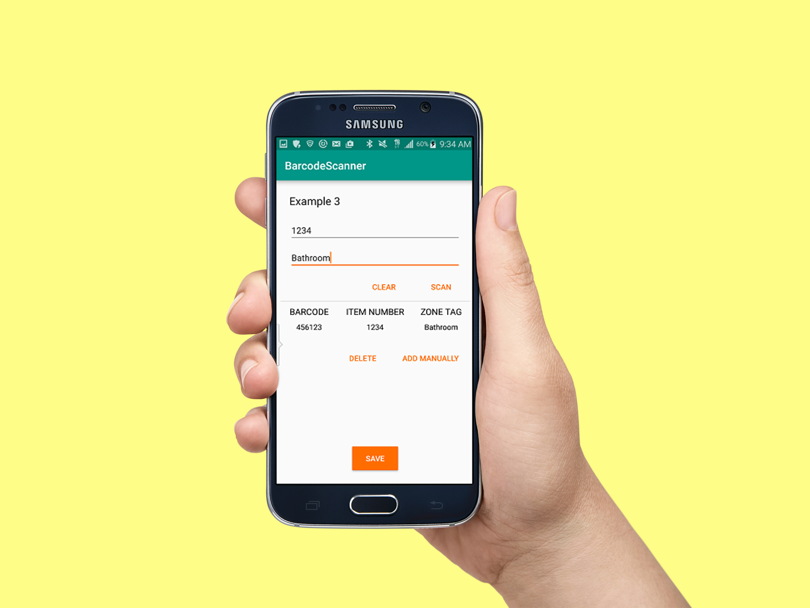

Barcode Scanner: Simplifying the Warehouse Inventory Count Process
UX Design — Mobile
UX Design — Mobile
Barcode Scanner is a mobile application that creates an exportable spreadsheet containing scanned warehouse inventory items. It was designed to improve the inventory process by simplifying the inventory count. I followed a user centered design approach by conducting user research, flow diagrams, sketching/wireframing, development, and testing, all while iterating where necessary.
This project was part of my internship experience and in compliance with my non-disclosure agreement, I have omitted confidential information.
I worked with another IT Intern who developed the app. My role was that of UX Designer, so I conducted user research and interviews, created flows, sketches, UI designs, and usability testing.
My task was to design an app that would establish a more streamlined way of counting inventory, essentially establishing a common procedure for all branches. The first step was to learn more about my users and ask how they were currently counting inventory and why.
In summary, my supervisor and I decided that pursuing the idea of an inventory app would accommodate all branches regardless of size by reducing the amount of effort and time to count their stock.


The following rough sketches helped me begin visualizing the interface:


I am not a visual designer, so I used elements of Material Design and followed it as a guideline. All branch managers and warehouse workers were given an Android company phone so I felt it was appropriate to design the app using Material Design.
Below are some key screens from the app.

Upon opening the app, the managers see all created spreadsheets and have the options of opening a spreadsheet, deleting a spreadsheet, creating a new spreadsheet, and sending (exporting) a spreadsheet.

One of the requested features was to make it possible for managers to enter item numbers (which specify item type) and zone tags (which specify the warehouse location of an item.) Other barcode scanning apps required managers to input this information every time they scanned a barcode, but I added two fields for managers to specify this information once. With every scan, the app will continuously add the item number and zone tag until the manager clears the fields or changes them.

Managers are given options on how they would like to export their spreadsheet. Most preferred the email method but we gave them a variety of options.
I worked with another IT Intern who was comfortable with app development. Since he was working in LA and I in Huntington Beach, we would meet once a week so that I could check in with him. Together, we'd go over his work to make sure that it was reflective of the requirements I had given him.
It took about three weeks for him to finish the first prototype of the app. After getting approval from our supervisors, I proceeded to test it with my pilot group.
The tasks for testing were very simple:
Since I wasn't able to oversee testing, I had to conduct these tests remotely by handing over the instructions and tools and waiting a week to hear back from the managers. It wasn't the best way to do testing, but it was the only way.
I conducted another group call to learn about their thoughts and suggestions for improvement. One of the requested changes was that the 'Back' button be moved towards the bottom of the screen because it felt odd to have it towards the top. I agreed that it was awkwardly placed and later realized that by having it towards the bottom, the manager could use their thumb (while holding their phone in one hand) to go back.
I was happy to learn that the app was received positively among the group. Unfortunately, because of the priority of other projects, I was unable to pursue the launch of this new process among other branches. It did feel amazing, however, to know that the branches I had worked with during the study decided to continue using the new process.
I would have changed two things about this project. First, I would have liked to have worked with the other IT intern from the start because I think he would have felt more comfortable working with me and he might have felt more ownership of the project rather than it just being a handoff.
Second, I would have liked to conduct the testing in person to observe the managers as they used the app and determine if it fit well within the inventory process. I feel like opportunities for insight were lost in having done testing the way we did, but I understand that sometimes situations are not ideal and that's ok. It's about making the best out of what has been given.
I'm very grateful for this experience because it made me confirm my desire to enter the UX field. It's very fulfilling to know that my efforts made someone's job easier and more enjoyable.